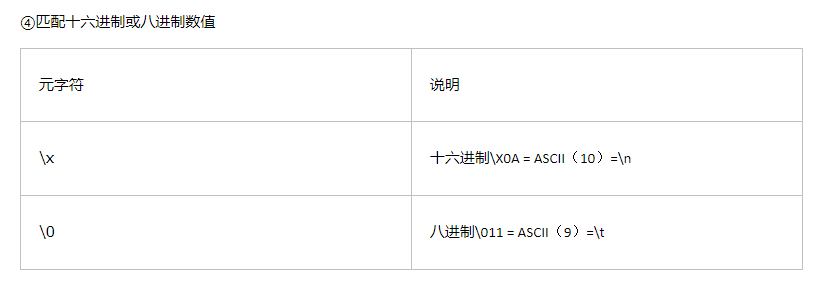

正则表达式还是要会的，不然你连受处分得资格都没有（无意调侃，莫怪罪。虽然说这样的工具类的东西，知道1，其他的要什么再去查博客啦，文档啦什么的就行，但是如果你觉得有必要，系统性的过一遍，收获还是蛮大的，突然又回想起暑假PM工作那问会不会Linux shell编程，其实之前是看过的，但是没有系统的去学，突然要你写起来就非常僵硬，还是咕咕咕了
本书主要内容

前人栽树后人乘凉，前人画图后人观赏
（意思就是图是盗来的（读书人怎么能叫盗呢，ε=ε=ε=┏(゜ロ゜;)┛逃。
第一章、入门
正则表达式（regular expression，简称 regex）是文本处理方面最强大的工具之一。正则表达式语言用来构造正则表达式（最终构造出来的字符串就称为正则表达式），正则表达式用来完成搜索或替换操作。实际的正则表达式经常被简称为模式，它们其实是一些由字符构成的字符串。这些字符可以是普通字符（纯文本）或元字符（有特殊含义的特殊字符）。
推荐一个工具Regester，本地测试的小工具
Regester传送门
第二章、匹配单个字符
1.匹配纯文本：
文本：Hello , my name is Ben. Please visit my website at http://www.forta.com/ .
正则表达式：Ben
结果：Hello , my name is Ben. Please visit my website at http://www.forta.com/ .
2.匹配任意字符：
“.”元字符可以匹配任何一个单个的字符。
3.匹配特殊字符：
“\”元字符可以对有含义的字符进行转义。
小结：正则表达式经常被简称为模式，它们其实是一些由字符构成的字符串。这些字符可以是普通字符（纯文本）或元字符（特殊含义的字符）。“.”可以匹配任何字符。“\”用来对字符进行转义。
第三章、匹配一组字符
1.匹配多个字符中的某一个：
“[”和“]”元字符定义一个字符集合。
在使用“[”和“]”定义的字符集合里，这两个字符之间的所有字符都是该集合的组成部分，字符集合的匹配结果是能够与该集合里的任意一个成员相匹配的文本。
2.利用字符集合区间：
正则表达式提供了一个特殊的元字符，字符区间可以用“-”（连字符）来定义。
字符区间：[A-Z]、[a-z]、[A-z]、[A-Za-z0-9]
Ps：区间外为“-”本身，无需转义
3.取非匹配：
“^”元字符表明对一个字符集合进行取非匹配。
取非：[^0-9]：匹配任何不是数字的字符
小结：元字符“[”和“]”用来定义一个字符集合，其含义是必须匹配该集合里的字符之一。定义一个字符集合的具体做法有两种：一是把所有的字符都列举出来；二是利用元字符“-”以字符区间的方式给出。字符集合可以以元字符“^”来求非，这将把给定的字符集强行排除在匹配操作以外，除了该字符集合里的字符，其他字符都可匹配。
第四章、使用元字符
1.元字符：是在正则表达式里有特殊含义的字符。
元字符分类： ①匹配文字（例如“.”）
②正则表达式语法要求（例如“[”“]”）




第五章、重复匹配
1.匹配一个或多个字符：
“+”：匹配一个或多个字符或字符集合，不可匹配0个字符。
Ps：一般来说，当在字符集合里使用“.”“+”这样的元字符时，被看做普通字符，无需转义。
2.匹配零个或多个字符：
“*”：匹配字符连续出现零次或多次的情况。
3.匹配零个或一个字符：
“？”：只能匹配一个字符或字符集合的零次或一次重复。
4.匹配的重复次数：
“{”“}”：在其中给出重复次数。
{数字}：确切的数
{小值，大值}：区间
{小值， }：至少重复“小值”次。
第六章、位置匹配
1.边界限定符：
③分行匹配模式：“（?m）”为分行匹配模式，把行分隔符当一个字符串分隔符。
第七章、使用子表达式
1.子表达式必须用“（”和“）”括起来。
2.子表达式的嵌套：
文本：Pinging hog.forta.com [12.159.46.200] with 32 bytes of data:
正则表达式：(((\d{1,2})|(1\d{2})|(2[0-4]\d)|(25[0-5])).){3}((\d{1,2})|(1\d{2})|(2[0-4]\d)|(25[0-5]))
结果：Pinging hog.forta.com [12.159.46.200] with 32 bytes of data:
小结：子表达式的作用是把同一个表达式的各个相关部分组合在一起。用“(”“)”来定义。子表达式的常见用途包括：对重复次数元字符的作用对象作出精确的设定和控制、对“|”操作符的OR条件作出准确的定义。
第八章、回溯引用，前后一致匹配
1.子表达式的另一用途：定义回溯引用。
2.“\1”是一个回溯引用，回溯引用指的是模式的后半部分引用在前半部分中定义的子表达式。
Ps：“\0”用来表示整个正则表达式。
文本：This is a block of of text,several words here are are repeated ,and and they should not be.
正则表达式：[ ]+(\w+)[ ]+\1
结果：This is a block of of text,several words here are are repeated ,and and they should not be.
3.回溯引用在替换操作中的应用：
替换操作需要用到两个正则表达式：搜索模式和替换模式。
文本：Hello , ben@forta.com is my email address.
正则表达式： (\w+[\w.]*@[\w.]+.\w+)
替换：$1
结果：Hello , ben@forta.com is my email address.
第九章、前后查找
1.向前查找：指定了一个必须匹配但不在结果中返回的模式。
从语法上来看，一个向前查找模式其实就是一个以“?=”开头的子表达式，需要匹配的文本跟在“=”的后面。
“匹配和返回文本”：消费
“只匹配不返回”：不消费
向前查找（向后查找）匹配本身其实是有返回结果的，只是这个结果的字节长度永远为0而已。因此，前后查找操作有时也称为零宽度匹配操作。
文本：
http://www.forta.com/
https://mail.forta.com/
ftp://ftp.forta.com/正则表达式： .+(?=:)
结果：
http
https
2.向后查找：“?<=”元字符。
文本：
ABC01：$23.45
HGG42：$5.31
CFMX1：$899.00
XTC99：$69.96
Total items found: 4正则表达式：(?<=$)[0-9.]+
结果：
ABC01：$23.45
HGG42：$5.31
CFMX1：$899.00
XTC99：$69.96
Total items found: 4
$30 for 100 apples, 50 oranges, and 60 pears. I saved $5 on this order .
正则表达式：\b(?<!$)\d+\b
结果：I paid $30 for 100 apples, 50 oranges, and 60 pears. I saved $5 on this order . （匹配数量）
小结：有了向后查找，可以对最终的匹配结果包含且只包含哪些内容作出更精确的控制。前后查找操作可以利用子表达式来指定文本匹配操作的发生位置，并收到只匹配不消费的效果。
第十章、 嵌入条件
1.正则表达式里的条件用“?”来定义。
2.嵌入条件：①根据一个回溯引用来进行条件处理。
②根据一个前后查找来进行条件处理。
3.回溯引用条件：
?(1)：检查第一个回溯引用是否存在。
文本：
123-456-7890
(123)456-7890
(123)-456-7890
(123-456-7890
1234567890
123 456 7890正则表达式：(\()?\d{3}(?(1))|-)\d{3}-\d{4}
结果：
123-456-7890
(123)456-7890
(123)-456-7890
(123-456-7890
1234567890
123 456 7890
4.前后查找条件: (?(前后查找表达式))
文本：
11111
22222
33333-
44444-4444正则表达式：\d{5}(?(?=-)-\d{4})
结果：
11111
22222
33333-
44444-4444
简单的python正则表达式(re模块)
1、一个网页的HTML源码。其中有一段
<html><body><h1>hello world<h1></body></html>你想要把这个hello world提取出来
import re
key = r"<html><body><h1>hello world<h1></body></html>"#这段是你要匹配的文本
p1 = r"(?<=<h1>).+?(?=<h1>)"#这是我们写的正则表达式规则，你现在可以不理解啥意思
pattern1 = re.compile(p1)#我们在编译这段正则表达式
matcher1 = re.search(pattern1,key)#在源文本中搜索符合正则表达式的部分
print matcher1.group(0)#打印出来2、既有http://开头的，又有https://开头的，我们怎么处理？
import re
key = r"http://www.nsfbuhwe.com and https://www.auhfisna.com"#胡编乱造的网址，别在意
p1 = r"https*://"#看那个星号！1
pattern1 = re.compile(p1)
print pattern1.findall(key)输出
['http://', 'https://']findall函数返回的总是正则表达式在字符串中所有匹配结果的列表